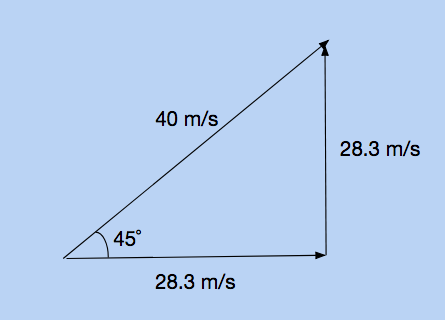

Last unit, we talked about motion in one direction. Projectile motion is the continuation of kinematics into two dimensions. A common misconception is that the 2 dimensional problems will be twice as hard. This is not the case: they will only be twice as long. You will have to use the kinematic equations twice: once for the horizontal direction, and once for the vertical direction.
Components of velocity in two dimensions
When solving projectile motion properties, you must treat the horizontal and vertical parts of motion as two seperate entities. For example, lets say you're given that a projectile has an initial velocity of 50 meters per second, launched at 60 degrees above the horizontal.The first thing you should do is break this up into speed in the x direction, and speed in the y direction. You can do this with trigonometry; to find the speed in the x direction, multiply the overall velocity by the cosine of the angle. To find the speed in the y direction, multiply the overall velocity by the sine of the angle.
We know that because of gravity, the velocity in the y direction will decrease by 9.8 meters per second, every second. However, the velocity in the x direction will remain constant! This means that if you throw a ball upwards and forwards, its speed in the horizontal direction will be the same at any point in time, even though its vertical speed will be constantly changing.
The following picture shows the horizontal and vertical velocity of a projectile change after each second.

Logic behind projectile motion problems
In projectile motion problems, there are a lot of implicits. None of these will be mentioned, but it is safe to assume that these rules will alwyas hold up. For example, the acceleration in the vertical direction will be -9.8. Also, since the speed is constant in the horizontal direction, the acceleration in the horizontal direction will be zero. You will often have to deduce more information from the prompt. For example, if a question asks how far a projectile will have traveled horizontally when at the peak of its trajectory, you can assume the final velocity in the vertical direction is zero, as that is when a projectile is at its peak. You would first solve for time, because time is the only variable that relates the horizontal and vertical components together. Once you have time, you can find horizontal displacement by multiplying time by horizontal velocity.
Example
When solving projectile motion problems, make two equations: one for the horizontal direction, and one for the vertical direction. For the horizontal equation, you will always use the principle that distance is equal to velocity times time. A general rule for solving projectile motion problems follows.
1. Break down the initial velocity into horizontal and vertical components, using the sine and cosine.
2. List the variables we have in the vertical direction. For example: acceleration (-9.8 meters per second squared), initial velocity, etc.
3. Use the equation that relates the given variables to the variable time
4. If necessary, multiply time by horizontal velocity to find horizontal displacement. This will not always be necessary, depending on the question.
A pitcher throws a ball with an initial velocity of 40 meters per second, 45 degrees up relative to the ground. If the pitcher is two meters tall, how long will it take for the ball to hit the ground.
1. We know that the angle is 45 degrees, and the net initial velocity is 40 meters per second. Therefore, we can break it up into horizontal and vertical velocity components. Using the equation above, 40 * cos(45) = 21 meters per second horizontally. Likewise, 40 * sin(45) = 21 meters per second vertically.

2. The variabes we have in the vertical direction are initial velocity (21 meters per second), acceleration (-9.8 meters per second squared), and displacement. The question asks when the ball hits the ground, and since the pitcher is 5 feet tall, this will occur when the ball is displaced negative two meters.
3. The equation that relates initial velocity, displacement, acceleration, and time is the third equation. Plugging in the values and solving will give you that time = 4.38 seconds.
4. Though this question does not ask for it, if you wanted to find horizontal displacement (how far it traveled during its path), you would simply multiply the time by the horizontal velocity. 4.38 x 21 = 92.0 meters.
This interactive program models the flight of a projectile, given a certain initial horizontal and vertical velocity. You can toggle the "trace projectile path" square in the top left corner. You can adjust the horizontal and vertical velocities using the sliders at the bottom.
Practice Problems
1. A man stands at the edge of a cliff,some height d. He throws one stone straight upwards, with a velocity of +v. At the same time, he throws a stone straight downwards, with a velocity of -v. Which stone will hit the ground with a greater final velocity?
2. A ball is thrown upwards. On its ascent, is the acceleration positive, zero, or negative. What about right at the peak of its motion? On its way down?
3. A rocket starts from rest, and blasts upwards. It covers 100 meters in 5 seconds. What is its acceleration?
4. A ball is thrown upwards with an initial velocity of 5 meters per second. At what distance from the thrower will the ball be at its greatest height?
5. A car traveling on a freeway covers 500 meters. It accelerates at a constant 2 meters per second during its trip, and ends with a final velocity of 50 meters per second. What was its initial velocity?
6. During a race, a runner accelerates from 8 meters per second to 10 meters per second in 2 seconds during the final stretch. What is her average acceleration?
7. In the previous question, what distance did the runner cover while accelerating from 8 to 10 meters per second?
8. (Challenge) Two cars line up for a race. The gun goes off, and one shoots off from the start with an initial speed of 20 meters per second. The other car starts at rest, but accelerates slowly, at a steady 2 meters per second. How long (in seconds) will it take for the accelerating car to pass the nonaccelerating car? How far away from the starting point will this happen?
Practice Answers
1.
Both will hit the ground with the same final velocity
To verify this, we can plug in arbitrary variables to the kinematic equations. We have the displacement (d), initial velocity (positive and negative v), and since this is a freefall problem, we know each ball has the same acceleration (a = -9.8). We're trying to find final velocity, so we need to find an equation that relates displacement, initial and final velocity, and acceleration. The fourth kinematic equation satisfies this parameter. You'll notice that the initial velocity term is squared, which cancels out the negative sign, verifying that a positive or negative initial velocity will yield the same result.
2.
Upwards: negative acceleration
Peak: negative acceleration
Downwards: negative acceleration
At every point in time, a ball in freefall will be accelerating downwards, or negatively. On its way up, its speed is decreasing, meaning that the acceleration acts in the opposite direction of the motion. On the way down, the speed is increasing, which means that the acceleration acts in the same direction of the motion. Its a bit trickier to conceptualize when the ball is at its peak, but remember that an object with zero velocity can have nonzero acceleration. Even though it is not moving at that point in time, its velocity will be negative in the next instance, so it does have a change in velocity (which is an acceleration).
3.
Acceleration: 8 meters per second squared
1. The variables given are initial velocity, time, and displacement. It starts from rest, which is why you can conclude that the initial velocity is 0 meters per second.
2. The question asks for acceleration, so you are solving for variable "a".
3. The third kinematic equation is the only one that relates initial velocity, time, acceleration, and displacement all together.
4. Plugging in vi = 0, d = 100, and t = 5, gives you a = 8 meters per second squared
4.
Time = .51 seconds
1. The variables given are initial velocity, acceleration, and final velocity. It is a freefall problem, which is why you can conclude that the acceleration is -9.8 meters per second squared. It asks for when the ball is at its greatest height, so you can conclude that this is when the velocity (final velocity) equals zero.
2. The question asks for time, so you are solving for variable "t".
3. The first kinematic equation is the only one that relates initial velocity, final velocity, acceleration, and time all together.
4. Plugging in vi = 5, vf = 0, and a = -9.8, gives you t = .51 seconds.
5.
Initial Velocity: 22.36 meters per second
1. The variables given are final velocity, displacement, and acceleration.
2. The question asks for initial velocity, so you are solving for variable "vi".
3. The fourth kinematic equation is the only one that relates final velocity, displacement, acceleration, and initial velocity all together.
4. Plugging in vf = 50, d = 500, and a = 2, gives you vi = 22.36 meters per second.
6.
Acceleration: 1 meter per second squared
1. The variables given are initial velocity, final velocity, and time.
2. The question asks for acceleration, so you are solving for variable "a".
3. The first kinematic equation is the only one that relates initial velocity, time, final velocity, and acceleration all together.
4. Plugging in vi = 8, vf = 10, and t = 2, gives you a = 1 meters per second squared
7.
Displacement: 18 meters
1. The variables given are initial velocity, final velocity, and time.
2. The question asks for displacement, so you are solving for variable "d".
3. The second kinematic equation is the only one that relates initial velocity, final velocity, acceleration, and displacement all together.
4. Plugging in vi = 6, vf = 8, and t = 2, gives you d = 18 meters
8.
Time: 20 seconds
Displacement: 400 meters
This is a bit harder to solve, so let's draw a schematic diagram to orient ourselves to the problem. We know that the first car (the one not accelerating) will have a final velocity of 20 meters per second, as it does not accelerate. We do not know the final velocity of the accelerating car.
We don't know the time or displacement, but we know that the time of car one will be the same as the time for car two, and likewise for displacement. This is implied, since the question asks us when they overlap. Technically, we now have four known variables: initial velocity, acceleration, displacement, and time. If we look for a kinematic equation that contains these four variables, we see that equation #3 fulfills this requirement. Now, we will make two seperate equations, one for each car, and solve.
Now that we have the time, we can plug this back into either of the equations from the picture. Both will yield 400 meters.
Back to Mechanics